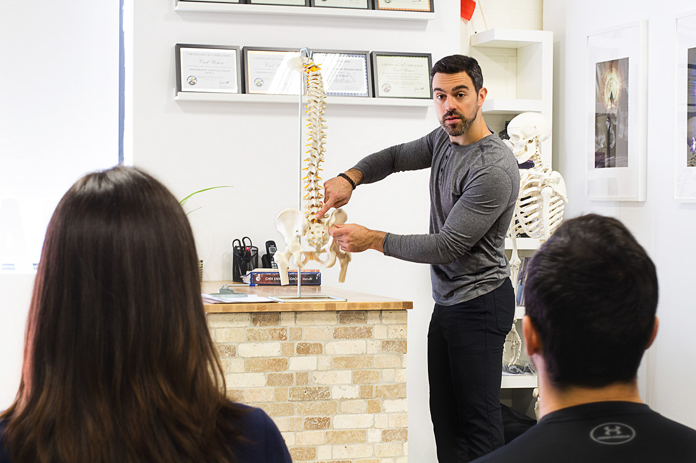

Create The
Perfect Workout
The 5-phase blueprint for functional joint longevity, kinetic freedom, and biological sovereignty.

Fig. 1.0 — Kinetic Spinal Decompression & Neuromuscular Alignment
The 5-phase blueprint for functional joint longevity, kinetic freedom, and biological sovereignty.
